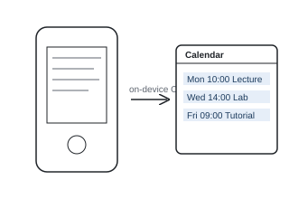

Take a photo of a printed timetable or schedule, and SnapCal reads the dates and times and adds them to your calendar. It works offline, because the text recognition runs on the device.
image_picker to take or choose a photo.google_mlkit_text_recognition for on-device text recognition (OCR).add_2_calendar to create the events, and shared_preferences for settings.The macOS build kept failing code signing. The cause was the project folder being synced by iCloud, which adds hidden file attributes that the signing step rejects. Moving the project out of iCloud fixed it.
A working prototype on macOS, paused while I focus on my studies and applications. It's meant to be the first step of a bigger app that gathers calendars and notes in one place.